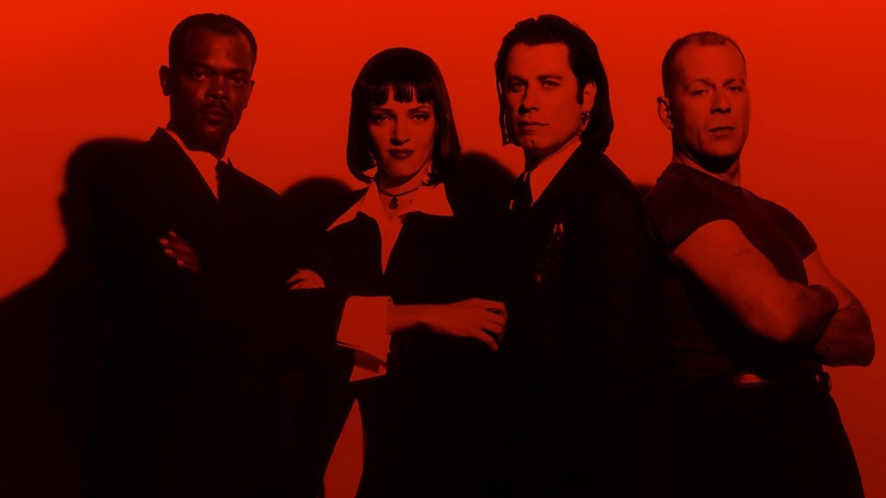
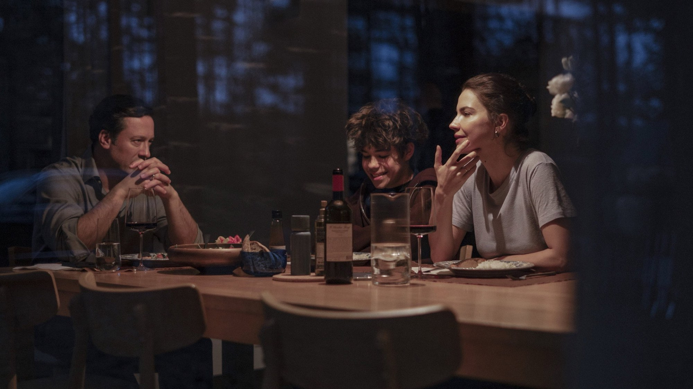

The Cinephile Journal: recensioni di film e serie TV, uscite al cinema e curiosità
Euphoria – Stagione 1
Nel 2019 Sam Levinson e Zendaya portarono il teen drama dentro la testa di una ragazza dipendente. Per noi resta il capitolo migliore della serie, anche quando si compiace dei suoi eccessi


Blog
Tutto il blog →
Pulp Fiction, Ezechiele 25:17: è nella Bibbia? (spoiler)
Il versetto che Jules recita prima di sparare è quasi tutto inventato: ecco cosa dice davvero la Bibbia in italiano, da quale film di karate arriva e perché alla fine cambia significato
Streaming nel weekend di Halloween: 30 ottobre-1 novembre
Da Nocturne con Liev Schreiber e Stephen Graham a Dexter: Resurrection 2, fino al thriller svedese di Netflix: quattro titoli per il weekend, con il nostro giudizio d'attesa

Blade Runner, «lacrime nella pioggia» (spoiler)
Una scena che vale per quello che toglie: cosa dice il monologo di Roy Batty in italiano, cosa tagliò Rutger Hauer e cosa cambia tra doppiaggio e originale

Al cinema dal 29 ottobre: i film in uscita
Un gelataio che trasforma i bambini in assassini, un frate del Seicento con Favino e il ritorno di Dracula in 4K: la settimana di Halloween in sala, con il nostro giudizio d'attesa
Seguici su Instagram
The Cinephile Journal è una rivista italiana di cinema e serie TV: pubblichiamo recensioni, le uscite al cinema e in streaming e curiosità dal set. Chi siamo
@the_cinephile_journal →